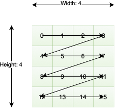
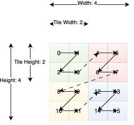

TT-NN Introduction
Welcome to TT-NN, a high-performance deep learning framework optimized for Tenstorrent’s AI accelerators. This tutorial will guide you through the fundamental concepts and operations needed to get started with TT-NN.
What You’ll Learn
Basic Setup: Device initialization and library importing
Tensor Management: Creating, moving, and manipulating tensors
PyTorch Integration: Seamless interoperability with PyTorch
Memory Optimization: Leveraging SRAM (L1) and DRAM for performance
Neural Network Operations: Building blocks for AI models
Advanced Features: Tensor sharding, compilation, and multi-device support
We recommend downloading and running this tutorial on your device! It’s available here.
1. Getting Started
TT-NN is implemented in C++ for optimal performance while providing Python bindings for ease of development and prototyping. This hybrid approach gives you the best of both worlds: high performance and developer productivity.
Importing the Library
Let’s start by importing TT-NN:
[ ]:
# Import the TT-NN library
import ttnn
# Display version information
print("TT-NN successfully imported!")
Device Initialization
Before performing any computations, we need to initialize a Tenstorrent device. The device ID (0) refers to the first available Tenstorrent device in your system:
[ ]:
# Initialize the first Tenstorrent device (device_id=0)
device = ttnn.open_device(device_id=0)
print(f"Device initialized successfully: {device}")
print(f"Device ID: {device.id()}")
print(f"Available compute cores: {device.compute_with_storage_grid_size()}")
2. Tensor Creation and Management
TT-NN tensors can exist in two locations:
Host (CPU): For data preparation and post-processing
Device (Tenstorrent hardware): For high-performance computation
Creating Host Tensors
Let’s start by creating a tensor on the host (CPU memory):
[ ]:
# Create a tensor filled with 1.0 values on the host (CPU)
# Shape: [10, 15] - 10 rows, 15 columns
host_tensor = ttnn.full([10, 15], 1.0)
print(f"Host tensor created:")
print(f" Shape: {host_tensor.shape}")
print(f" Data type: {host_tensor.dtype}")
print(f" Device: {host_tensor.device()}") # Should show None (host)
print(f" Layout: {host_tensor.layout}")
print(f" Memory config: {host_tensor.memory_config()}")
Moving Tensors to Device
To perform computations on Tenstorrent hardware, we need to transfer tensors from host to device:
[ ]:
# Transfer the host tensor to the device
device_tensor = ttnn.to_device(host_tensor, device)
print(f"Device tensor created:")
print(f" Shape: {device_tensor.shape}")
print(f" Device: {device_tensor.device()}") # Should show the device ID
print(f" Layout: {device_tensor.layout}") # Same layout as host tensor
print(f" Memory config: {device_tensor.memory_config()}") # Default DRAM
Creating Tensors Directly on Device
For efficiency, you can also create tensors directly on the device without going through the host:
[ ]:
# Create a tensor with random values directly on the device
# This is more efficient as it avoids host->device transfer
device_tensor_2 = ttnn.rand([10, 15], device=device)
print(f"Direct device tensor created:")
print(f" Shape: {device_tensor_2.shape}")
print(f" Device: {device_tensor_2.device()}")
print(f" Layout: {device_tensor_2.layout}") # May default to different layout
3. PyTorch Interoperability
One of TT-NN’s key strengths is seamless integration with PyTorch, allowing you to leverage existing PyTorch code and models. You can easily convert between PyTorch tensors and TT-NN tensors.
[ ]:
# Import PyTorch for interoperability demonstrations
import torch
print(f"PyTorch version: {torch.__version__}")
print("Ready for PyTorch <-> TT-NN conversions!")
[ ]:
# Create a PyTorch tensor with random values
torch_tensor = torch.rand([10, 15])
print(f"Original PyTorch tensor shape: {torch_tensor.shape}")
print(f"Original PyTorch tensor dtype: {torch_tensor.dtype}")
# Convert PyTorch tensor to TT-NN tensor on host
host_ttnn_from_torch = ttnn.from_torch(torch_tensor)
print(f"\nTT-NN tensor from PyTorch (host):")
print(f" Shape: {host_ttnn_from_torch.shape}")
print(f" Layout: {host_ttnn_from_torch.layout}")
print(f" Device: {host_ttnn_from_torch.device()}")
# Convert PyTorch tensor to TT-NN tensor directly on device with tile layout
# Tile layout is optimized for Tenstorrent hardware operations
device_ttnn_from_torch = ttnn.from_torch(
torch_tensor,
device=device,
layout=ttnn.TILE_LAYOUT
)
print(f"\nTT-NN tensor from PyTorch (device, tiled):")
print(f" Shape: {device_ttnn_from_torch.shape}")
print(f" Layout: {device_ttnn_from_torch.layout}")
print(f" Device: {device_ttnn_from_torch.device()}")
print(f" Memory config: {device_ttnn_from_torch.memory_config()}")
Moving Tensors Back to Host
After performing computations on the device, you often need to transfer results back to the host for further processing or analysis:
[ ]:
# Create a device tensor for demonstration
device_tensor = ttnn.rand([10, 15], device=device)
print(f"Original device tensor: {device_tensor.device()}")
# Method 1: Transfer device tensor back to host using ttnn.from_device
host_tensor = ttnn.from_device(device_tensor)
print(f"Transferred to host using from_device(): {host_tensor.device()}")
# Method 2: Alternative syntax using .cpu() method (similar to PyTorch)
host_tensor_alt = device_tensor.cpu()
print(f"Transferred to host using .cpu(): {host_tensor_alt.device()}")
# Both methods produce equivalent results
print(f"Shapes match: {host_tensor.shape == host_tensor_alt.shape}")
print(f"Host tensor shape: {host_tensor.shape}")
Converting Back to PyTorch
TT-NN tensors can be seamlessly converted back to PyTorch tensors for further processing or integration with PyTorch-based pipelines:
[ ]:
# Convert TT-NN tensor (device or host) back to PyTorch tensor
# Note: Device tensors are automatically transferred to host during conversion
torch_tensor_result = ttnn.to_torch(device_tensor)
print(f"Converted back to PyTorch:")
print(f" PyTorch tensor shape: {torch_tensor_result.shape}")
print(f" PyTorch tensor dtype: {torch_tensor_result.dtype}")
print(f" PyTorch tensor device: {torch_tensor_result.device}")
# Display tensor properties for comparison
print(f"\nTensor Properties Comparison:")
print(f"Host TT-NN tensor:")
print(f" Shape: {host_tensor.shape}")
print(f" Layout: {host_tensor.layout}")
print(f" Data type: {host_tensor.dtype}")
print(f" Memory config: {host_tensor.memory_config()}")
print(f" Device: {host_tensor.device()}")
print(f"\nDevice TT-NN tensor:")
print(f" Shape: {device_tensor.shape}")
print(f" Layout: {device_tensor.layout}")
print(f" Data type: {device_tensor.dtype}")
print(f" Memory config: {device_tensor.memory_config()}")
print(f" Device: {device_tensor.device()}")
4. Understanding Tensor Layouts
📖 Documentation: Tensor Layouts
TT-NN supports two primary tensor layouts that affect how data is stored in memory and how operations are performed:
Layout Types
🔲 ROW_MAJOR_LAYOUT - Traditional row-by-row data storage

🟦 TILE_LAYOUT - Optimized 32×32 tile-based storage

Why Tile Layout Matters
Tenstorrent hardware is specifically optimized for tiled data layouts. Most high-performance operations require tensors in tile layout for efficient execution. When converting to tile layout:
Tensors are automatically padded to fill complete 32×32 tiles
This padding is handled transparently - you don’t need to worry about it
Operations run significantly faster on tiled data
Default Behavior
By default, most tensor creation functions use row-major layout, but this can vary:
[ ]:
# Check default layouts for different tensor creation methods
host_tensor = ttnn.full([3,4], 1.0)
device_tensor = ttnn.full([3,4], 1.0, device=device)
print(f"Host tensor layout: {host_tensor.layout}") # ROW_MAJOR_LAYOUT
print(f"Device tensor layout: {device_tensor.layout}") # ROW_MAJOR_LAYOUT
# Note: ttnn.full() uses ROW_MAJOR_LAYOUT by default for both host and device
Functions with Different Default Layouts
However, some operations create tensors directly in tile layout for performance reasons:
[ ]:
# ttnn.rand() defaults to TILE_LAYOUT for device tensors
rand_tensor = ttnn.rand([10,15], device=device)
print(f"Random tensor layout: {rand_tensor.layout}") # TILE_LAYOUT
print(f"This is because ttnn.rand() optimizes for device operations")
Layout Preservation During Transfer
When you transfer tensors between host and device, the layout is preserved:
[ ]:
# Create a host tensor (row-major by default)
host_tensor = ttnn.full([3, 4], 1.0)
print(f"Host tensor layout: {host_tensor.layout}")
# Transfer to device - layout is preserved
device_tensor = ttnn.to_device(host_tensor, device)
print(f"Device tensor layout: {device_tensor.layout}")
# The layout remains ROW_MAJOR_LAYOUT even on device
print("Layout preserved during host->device transfer")
Converting Between Layouts
You can explicitly convert between layouts using ttnn.to_layout(). This is often necessary to optimize performance:
[ ]:
# Start with row-major layout
print(f"Original layout: {device_tensor.layout}")
# Convert to tile layout for optimized operations
device_tensor = ttnn.to_layout(device_tensor, ttnn.TILE_LAYOUT)
print(f"After conversion: {device_tensor.layout}")
When converting from PyTorch tensors, you can specify the desired layout:
[ ]:
torch_tensor = torch.rand([10,15])
print(ttnn.from_torch(torch_tensor).layout)
print(ttnn.from_torch(torch_tensor, device=device).layout)
print(ttnn.from_torch(torch_tensor, device=device, layout=ttnn.TILE_LAYOUT).layout)
5. Data Types and Precision
TT-NN supports various data types optimized for AI workloads, ranging from high precision (float32) to ultra-compact formats (bfloat4_b) that maximize throughput and memory efficiency.
Supported Data Types
TT-NN supports the following data types, each optimized for different use cases:
Data Type |
Bits |
Use Case |
Trade-off |
|---|---|---|---|
uint16 |
16 |
Integer operations |
Standard integer precision |
uint32 |
32 |
Integer operations |
Higher integer precision |
float32 |
32 |
High precision float |
Standard accuracy, more memory |
bfloat16 |
16 |
Neural networks |
Good accuracy, 2x memory savings |
bfloat8_b |
8 |
Inference, large models |
4x memory savings, reduced accuracy |
bfloat4_b |
4 |
Ultra-efficient inference |
8x memory savings, lowest accuracy |
Performance vs. Accuracy Trade-offs
-
Lower precision formats (bfloat8_b, bfloat4_b) provide:
Better memory bandwidth and computational efficiency
Faster operations due to reduced data movement
Reduced numerical accuracy - may impact model quality
-
Higher precision formats (float32, bfloat16) provide:
Higher accuracy for numerical computations
More memory usage and potentially slower operations
[ ]:
# Create a tensor with bfloat16 precision (common for neural networks)
x_bf16 = ttnn.rand([1000, 1000], device=device, dtype=ttnn.bfloat16)
print(f"BFloat16 tensor: {x_bf16.dtype}, Shape: {x_bf16.shape}")
# Convert to different data types using ttnn.typecast()
print("\n=== Data Type Conversions ===")
# Convert to float32 (higher precision)
x_float32 = ttnn.typecast(x_bf16, ttnn.float32)
print(f"Float32 tensor: {x_float32.dtype}")
# Convert to uint16 (integer type)
x_uint16 = ttnn.typecast(x_bf16, ttnn.uint16)
print(f"UInt16 tensor: {x_uint16.dtype}")
# Convert to bfloat8_b (reduced precision for efficiency)
x_bf8_b = ttnn.typecast(x_bf16, ttnn.bfloat8_b)
print(f"BFloat8_b tensor: {x_bf8_b.dtype}")
# Convert to bfloat4_b (ultra-low precision)
x_bf4_b = ttnn.typecast(x_bf16, ttnn.bfloat4_b)
print(f"BFloat4_b tensor: {x_bf4_b.dtype}")
print("\nTip: Use lower precision types for inference to maximize throughput!")
6. Basic Tensor Operations
TT-NN provides a comprehensive set of tensor operations similar to PyTorch, but optimized for Tenstorrent hardware. Most operations are performed on device tensors for maximum performance.
Important Operation Requirements
Device-only operations: Most TT-NN operations are only supported on device tensors, not host tensors
Layout considerations: Many operations perform better on TILE_LAYOUT tensors
Matrix multiplication: For advanced control over math fidelity and performance, see the Matrix Engine documentation
Creating Test Data
Let’s create some tensors for demonstrating operations:
[ ]:
# Create a range tensor from 0 to 99, then normalize it to [0, 1]
x = ttnn.arange(start=0, end=100, device=device, layout=ttnn.TILE_LAYOUT)
print(f"Created range tensor: shape={x.shape}, layout={x.layout}")
# Normalize to range [0, 1] by dividing by 100
x = ttnn.divide(x, 100)
print(f"Normalized tensor to [0, 1] range")
# Reshape to a row vector for operations
x = x.reshape([1, 100])
print(f"Reshaped to: {x.shape}")
print(f"Values range from ~0 to ~1")
[ ]:
# Create a second random tensor for binary operations
y = ttnn.rand([1, 100], device=device)
print(f"Created random tensor y: shape={y.shape}")
print(f"Ready for element-wise operations!")
[ ]:
# Arithmetic Operations (Element-wise)
print("=== Arithmetic Operations ===")
# Addition - both operators work
result_add = x + y # Operator overloading
print(f"Addition (x + y): shape={result_add.shape}")
# Multiplication
result_mul = x * y
print(f"Multiplication (x * y): shape={result_mul.shape}")
# Subtraction
result_sub = x - y
print(f"Subtraction (x - y): shape={result_sub.shape}")
# Division - using function call
result_div = ttnn.divide(x, y)
print(f"Division ttnn.divide(x, y): shape={result_div.shape}")
print("\nAll arithmetic operations completed successfully!")
[ ]:
# Mathematical Functions (Unary operations)
print("=== Mathematical Functions ===")
# Trigonometric functions
sin_x = ttnn.sin(x)
cos_x = ttnn.cos(x)
print(f"sin(x) and cos(x): computed")
# Exponential and logarithmic functions
exp_x = ttnn.exp(x) # e^x
log_x = ttnn.log(x) # natural logarithm
print(f"exp(x) and log(x): computed")
# Power and root functions
sqrt_x = ttnn.sqrt(x) # square root
pow_x = ttnn.pow(x, 2) # x^2 (square)
print(f"sqrt(x) and pow(x, 2): computed")
print(f"\nAll mathematical functions applied to tensor of shape {x.shape}")
print("These functions work element-wise on the entire tensor")
[ ]:
# Data movement functions
ttnn.sort(y)
[ ]:
# Tensor manipulation functions
ttnn.concat([x, y], dim=1)
Tensor slicing is also supported:
[ ]:
x[:, 50:100]
The full set of supported operations is available in the TT-NN API documentation.
Neural Network Operations
TT-NN provides neural network operations as pure functions (similar to torch.nn.functional), giving you flexibility in structuring your model classes:
[ ]:
input_ids = ttnn.from_torch(
torch.randint(0, 1000, (2, 32)), dtype=ttnn.uint32, device=device
)
emb_weight = ttnn.rand((1, 1, 1000, 512), dtype=ttnn.bfloat16, device=device)
x = ttnn.embedding(input_ids, emb_weight, layout=ttnn.TILE_LAYOUT) # [2, 32, 512]
x = ttnn.reshape(x, (2, 1, 32, 512))
# LayerNorm
x = ttnn.layer_norm(x, epsilon=1e-5)
# Linear: 512 -> 2048 -> 512
w1 = ttnn.rand(
(1, 1, 512, 2048), dtype=ttnn.bfloat16, layout=ttnn.TILE_LAYOUT, device=device
)
x = ttnn.relu(ttnn.linear(x, w1))
w2 = ttnn.rand(
(1, 1, 2048, 512), dtype=ttnn.bfloat16, layout=ttnn.TILE_LAYOUT, device=device
)
x = ttnn.linear(x, w2)
For a comprehensive list of neural network operations, refer to the TT-NN API documentation.
7. Just-In-Time Compilation and Caching
TT-NN uses just-in-time (JIT) compilation to generate optimized kernels for Tenstorrent hardware. This means:
First Run vs. Subsequent Runs
First execution: Slow due to kernel compilation
Subsequent executions: Fast using cached compiled kernels
What Affects Compilation?
Tensor shapes: Different shapes trigger new compilation
Operation types: Each operation type needs compilation
Data types: Different precisions require different kernels
Memory layouts: ROW_MAJOR vs TILE_LAYOUT use different kernels
Let’s demonstrate this compilation behavior:
[ ]:
import time
# Create a test tensor
x = ttnn.rand([1000, 1000], device=device)
print(f"Testing compilation with tensor shape: {x.shape}")
# === FIRST EXECUTION (includes compilation time) ===
print("\n=== First Execution (Compilation + Execution) ===")
start = time.time()
y = ttnn.softmax(x, dim=1)
# IMPORTANT: ttnn.synchronize_device() ensures the operation completes
# Without it, we only measure dispatch time, not actual execution time
ttnn.synchronize_device(device)
first_time = time.time() - start
print(f"Time: {first_time:.4f} seconds (includes compilation)")
# === SECOND EXECUTION (cached, no compilation) ===
print("\n=== Second Execution (Cached) ===")
start = time.time()
y = ttnn.softmax(x, dim=1)
ttnn.synchronize_device(device)
cached_time = time.time() - start
print(f"Time: {cached_time:.4f} seconds (cached)")
# Show the speedup from caching
speedup = first_time / cached_time if cached_time > 0 else float('inf')
print(f"\nSpeedup from caching: {speedup:.1f}x faster!")
print(f"Compilation overhead: {(first_time - cached_time)*1000:.1f}ms")
The compilation cache is tied to compile-time parameters such as tensor shape. When these parameters change, a new compilation is triggered:
[ ]:
# Same operation, different shape
x = ttnn.rand([1337, 1337], device=device)
start = time.time()
y = ttnn.softmax(x, dim=1)
ttnn.synchronize_device(device)
end = time.time()
print(f"First iteration: {end - start} seconds")
start = time.time()
y = ttnn.softmax(x, dim=1)
ttnn.synchronize_device(device)
end = time.time()
print(f"Time taken: {end - start} seconds")
Direct SRAM (L1) control
TT-Metal and TT-NN provide explicit control over tensor placement in device memory hierarchy, allowing you to optimize data movement between slower DRAM and faster SRAM (L1 cache).
[ ]:
dram_tensor = ttnn.rand([4096, 4096], device=device)
dram_tensor.memory_config()
[ ]:
sram_tensor = ttnn.to_memory_config(dram_tensor, ttnn.L1_MEMORY_CONFIG)
sram_tensor.memory_config()
[ ]:
# warmup, compilation
ttnn.sum(dram_tensor, dim=0)
ttnn.sum(sram_tensor, dim=0)
ttnn.synchronize_device(device)
start = time.time()
for _ in range(10):
ttnn.sum(dram_tensor, dim=0)
ttnn.synchronize_device(device)
end = time.time()
print(f"DRAM Time taken: {end - start} seconds")
start = time.time()
for _ in range(10):
ttnn.sum(sram_tensor, dim=0)
ttnn.synchronize_device(device)
end = time.time()
print(f"SRAM Time taken: {end - start} seconds")
Memory Management Best Practice:
When performing sequences of operations, manually deallocate intermediate tensors to free memory. This is particularly important for L1 memory due to its limited capacity:
[ ]:
ttnn.deallocate(sram_tensor)
Advanced: Tensor Sharding
For optimal performance, you can shard tensors across compute cores to minimize data movement. This keeps data closer to the cores processing it.
Learn more: - Tensor Sharding Documentation - Technical Report on Tensor Sharding
[ ]:
sharded_tensor = ttnn.to_memory_config(dram_tensor, ttnn.L1_MEMORY_CONFIG)
ttnn.sum(sharded_tensor, dim=0)
ttnn.synchronize_device(device)
start = time.time()
for _ in range(10):
res = ttnn.sum(sharded_tensor, dim=0)
ttnn.synchronize_device(device)
end = time.time()
interleaved_l1_time = end - start
print(f"Interleaved L1 Time taken: {interleaved_l1_time * 1000} ms")
ttnn.deallocate(sharded_tensor)
sharded_config = ttnn.create_sharded_memory_config(
shape=dram_tensor.shape,
core_grid=ttnn.CoreGrid(x=8, y=8),
strategy=ttnn.ShardStrategy.WIDTH,
)
sharded_tensor = ttnn.to_memory_config(dram_tensor, sharded_config)
ttnn.sum(sharded_tensor, dim=0)
ttnn.synchronize_device(device)
start = time.time()
for _ in range(10):
res = ttnn.sum(sharded_tensor, dim=0)
ttnn.synchronize_device(device)
end = time.time()
width_sharded_time = end - start
print(f"Width sharded Time taken: {width_sharded_time * 1000} ms")
ttnn.deallocate(sharded_tensor)
sharded_config = ttnn.create_sharded_memory_config(
shape=dram_tensor.shape,
core_grid=ttnn.CoreGrid(x=8, y=8),
strategy=ttnn.ShardStrategy.HEIGHT,
)
sharded_tensor = ttnn.to_memory_config(dram_tensor, sharded_config)
ttnn.sum(sharded_tensor, dim=0)
ttnn.synchronize_device(device)
start = time.time()
for _ in range(10):
res = ttnn.sum(sharded_tensor, dim=0)
ttnn.synchronize_device(device)
end = time.time()
height_sharded_time = end - start
print(f"Height sharded Time taken: {height_sharded_time * 1000} ms")
ttnn.deallocate(sharded_tensor)
Preserving Intermediate Results in L1
Explicit L1 control allows you to keep intermediate results in fast memory without fusing operations:
[ ]:
x = ttnn.rand([32, 128], device=device, memory_config=ttnn.L1_MEMORY_CONFIG)
[ ]:
w1 = ttnn.rand([128, 128], device=device, memory_config=ttnn.L1_MEMORY_CONFIG)
w2 = ttnn.rand([128, 128], device=device, memory_config=ttnn.L1_MEMORY_CONFIG)
[ ]:
x1 = ttnn.linear(x, w1, memory_config=ttnn.L1_MEMORY_CONFIG)
print(x1.memory_config())
x2 = ttnn.relu(x1) # automatically maintains L1 config
print(x2.memory_config())
x3 = ttnn.linear(x2, w2, memory_config=ttnn.L1_MEMORY_CONFIG)
print(x3.memory_config())
ttnn.deallocate(x1)
ttnn.deallocate(x2)
ttnn.deallocate(x3)
Inference Focus
TT-NN is optimized for inference workloads and does not include automatic differentiation (autograd).
For training support, see our separate training framework tt-train.
Development Tools
TT-NN includes comprehensive tooling for development and debugging:
ttnn-visualizer - Visual debugging and analysis
Tracy Profiler - Host and device profiling
TT-NN Graph Trace - Operation graph visualization
Advanced Topics
8. Exercise: Implement Scaled Dot-Product Attention
Now let’s put your TT-NN knowledge to the test! Implement a composite version of Scaled Dot-Product Attention (the core operation in Transformers) using basic TT-NN operations.
Background
Scaled Dot-Product Attention is defined as:
SDPA(Q, K, V) = softmax((Q × K^T) / √d_k) × V
Where:
Q: Query matrix
K: Key matrix
V: Value matrix
d_k: Dimension of the key vectors (for scaling)
Your Task
Complete the composite_sdpa function below using basic TT-NN operations:
[ ]:
import math
def composite_sdpa(q, k, v, causal_mask, scale=None):
"""
Implement Scaled Dot-Product Attention using basic TT-NN operations.
Args:
q: Query tensor [batch, num_heads, seq_len, head_dim]
k: Key tensor [batch, num_heads, seq_len, head_dim]
v: Value tensor [batch, num_heads, seq_len, head_dim]
causal_mask: Mask tensor for autoregressive attention
scale: Optional scaling factor (defaults to 1/sqrt(head_dim))
Returns:
Attention output tensor [batch, num_heads, seq_len, head_dim]
"""
# TODO: Implement the following steps:
# Step 1: Scale the queries (Q × scale)
# If no scale provided, use 1/sqrt(head_dim)
if scale is None:
head_dim = q.shape[-1]
scale = 1.0 / math.sqrt(head_dim)
# YOUR CODE HERE: Scale the queries
q_scaled = ... # HINT: Use ttnn.multiply()
# Step 2: Transpose the keys (K^T)
# YOUR CODE HERE: Transpose the last two dimensions of k
k_t = ... # HINT: Use ttnn.permute()
# Step 3: Compute attention scores (Q_scaled × K^T)
# YOUR CODE HERE: Matrix multiply q_scaled and k_t
attn_scores = ... # HINT: Use ttnn.matmul()
# Step 4: Apply causal mask (add mask to scores)
# YOUR CODE HERE: Add the causal_mask to attention scores
masked_scores = ... # HINT: Use ttnn.add()
# Step 5: Apply softmax along the last dimension
# YOUR CODE HERE: Apply softmax to get attention weights
attn_weights = ... # HINT: Use ttnn.softmax()
# Step 6: Apply attention weights to values (attn_weights × V)
# YOUR CODE HERE: Matrix multiply attention weights and values
output = ... # HINT: Use ttnn.matmul()
# return output # Replace once your implementation is complete
return ttnn.rand([1, 32, 1024, 128], device=device) # Placeholder return
print("SDPA function template ready!")
print("Replace the placeholder operations above to complete the implementation")
[ ]:
import time
batch, num_heads, seq_len, head_dim = 1, 32, 1024, 128
num_iterations, warmup_iterations = 50, 1
print(f"Config: B={batch}, H={num_heads}, S={seq_len}, D={head_dim}, Causal=True")
torch.manual_seed(42)
Q_torch = torch.randn(batch, num_heads, seq_len, head_dim)
K_torch = torch.randn(batch, num_heads, seq_len, head_dim)
V_torch = torch.randn(batch, num_heads, seq_len, head_dim)
Q_tt = ttnn.from_torch(Q_torch, dtype=ttnn.bfloat16, layout=ttnn.TILE_LAYOUT, device=device)
K_tt = ttnn.from_torch(K_torch, dtype=ttnn.bfloat16, layout=ttnn.TILE_LAYOUT, device=device)
V_tt = ttnn.from_torch(V_torch, dtype=ttnn.bfloat16, layout=ttnn.TILE_LAYOUT, device=device)
causal_mask = torch.triu(torch.ones(seq_len, seq_len) * float('-inf'), diagonal=1).unsqueeze(0).unsqueeze(0)
causal_mask_tt = ttnn.from_torch(causal_mask, dtype=ttnn.bfloat16, layout=ttnn.TILE_LAYOUT, device=device)
print("\n=== Accuracy Test ===")
output_composite = composite_sdpa(Q_tt, K_tt, V_tt, causal_mask_tt)
output_composite_torch = ttnn.to_torch(output_composite)[:, :, :seq_len, :head_dim]
output_optimized = ttnn.transformer.scaled_dot_product_attention(Q_tt, K_tt, V_tt, is_causal=True)
output_optimized_torch = ttnn.to_torch(output_optimized)[:, :, :seq_len, :head_dim]
output_torch = torch.nn.functional.scaled_dot_product_attention(Q_torch, K_torch, V_torch, is_causal=True)
pcc_composite = torch.corrcoef(torch.stack([output_composite_torch.flatten(), output_torch.flatten()]))[0, 1].item()
pcc_optimized = torch.corrcoef(torch.stack([output_optimized_torch.flatten(), output_torch.flatten()]))[0, 1].item()
rmse_composite = torch.sqrt(((output_composite_torch - output_torch) ** 2).mean()).item()
rmse_optimized = torch.sqrt(((output_optimized_torch - output_torch) ** 2).mean()).item()
print(f"Composite vs PyTorch: PCC={pcc_composite:.6f}, RMSE={rmse_composite:.6f}")
print(f"Optimized vs PyTorch: PCC={pcc_optimized:.6f}, RMSE={rmse_optimized:.6f}")
print("\n=== Speed Test ===")
print("Warming up (compiling kernels)...")
for _ in range(warmup_iterations):
out = composite_sdpa(Q_tt, K_tt, V_tt, causal_mask_tt)
out = ttnn.transformer.scaled_dot_product_attention(Q_tt, K_tt, V_tt, is_causal=True)
start = time.perf_counter()
for _ in range(num_iterations):
output = composite_sdpa(Q_tt, K_tt, V_tt, causal_mask_tt)
ttnn.synchronize_device(device)
composite_time = (time.perf_counter() - start) / num_iterations * 1000
start = time.perf_counter()
for _ in range(num_iterations):
output = ttnn.transformer.scaled_dot_product_attention(Q_tt, K_tt, V_tt, is_causal=True)
ttnn.synchronize_device(device)
optimized_time = (time.perf_counter() - start) / num_iterations * 1000
speedup = composite_time / optimized_time
print(f"Composite SDPA: {composite_time:.3f} ms")
print(f"Optimized SDPA: {optimized_time:.3f} ms")
print(f"Speedup: {speedup:.2f}x")
Math Fidelity Control
TT-NN provides fine-grained control over computational precision for performance tuning. The matrix engine supports multiple math fidelity modes that trade accuracy for speed.
Additional resources: - Matrix Engine Technical Report - Data Format Documentation
[ ]:
import torch
import time
M, K, N = 2048, 2048, 2048
print(f"> Matrix dimensions: {M}x{K} @ {K}x{N}")
torch.manual_seed(42)
a = torch.randn((M, K), dtype=torch.bfloat16)
b = torch.randn((K, N), dtype=torch.bfloat16)
reference = torch.matmul(a.float(), b.float())
tt_a = ttnn.from_torch(a, dtype=ttnn.bfloat16, layout=ttnn.TILE_LAYOUT, device=device)
tt_b = ttnn.from_torch(b, dtype=ttnn.bfloat16, layout=ttnn.TILE_LAYOUT, device=device)
print("\n" + "-" * 80)
print(f"{'Fidelity':<10} {'Time (ms)':<12} {'Mean Error':<12}")
print("-" * 80)
# Test different fidelities
fidelities = [
(ttnn.MathFidelity.LoFi, "LoFi"),
(ttnn.MathFidelity.HiFi2, "HiFi2"),
(ttnn.MathFidelity.HiFi3, "HiFi3"),
(ttnn.MathFidelity.HiFi4, "HiFi4"),
]
for fidelity, name in fidelities:
# Configure compute kernel
# Note: Enable FP32 accumulation for HiFi2/HiFi4 to see accuracy benefits
# With BF16 accumulation and large values, LSB corrections can introduce noise
use_fp32_acc = (fidelity != ttnn.MathFidelity.LoFi)
config = ttnn.WormholeComputeKernelConfig(
math_fidelity=fidelity,
math_approx_mode=False,
fp32_dest_acc_en=use_fp32_acc, # FP32 for HiFi2/HiFi4
packer_l1_acc=use_fp32_acc, # L1 accumulation for better precision
)
# Warm-up
_ = ttnn.matmul(tt_a, tt_b, compute_kernel_config=config)
# Time the operation
start = time.time()
for _ in range(50):
result_tt = ttnn.matmul(tt_a, tt_b, compute_kernel_config=config)
ttnn.synchronize_device(device)
elapsed = (time.time() - start) / 50 * 1000 # Convert to ms
# Get result
result = ttnn.to_torch(result_tt).float()
# Compute errors and PCC
error = torch.abs(reference - result)
mean_err = error.mean().item()
print(f"{name:<10} {elapsed:>10.4f} {mean_err:>10.8f}")
Metal Trace
Metal trace allows you to record and replay sequences of operations for improved performance:
# Begin recording operations
tid = ttnn.begin_trace_capture(device, cq_id=0)
output = run_model(input)
ttnn.end_trace_capture(device, tid, cq_id=0)
# Replay the traced operations
ttnn.execute_trace(device, tid, cq_id=0)
This is particularly useful for eliminating Python overhead in production inference.
Multi-device
TT-NN supports distributed computing across multiple devices using collective communication operations (CCL):
Example: Tensor Sharding Across Devices
# Open a 1x2 mesh of devices
mesh_device = ttnn.open_mesh_device(ttnn.MeshShape(1, 2))
# Create a torch tensor
torch_tensor = torch.zeros(1, 1, 32, 64)
torch_tensor[..., 0:32] = 1.0
torch_tensor[..., 32:64] = 2.0
# Shard the tensor across devices along dimension 3
mesh_tensor = ttnn.from_torch(
torch_tensor,
layout=ttnn.TILE_LAYOUT,
device=mesh_device,
mesh_mapper=ttnn.ShardTensorToMesh(mesh_device, dim=3),
)
# Perform collective operations
output_tensor = ttnn.all_gather(mesh_tensor, dim=3, num_links=1)
This enables efficient model parallelism and data parallelism across multiple Tenstorrent devices.